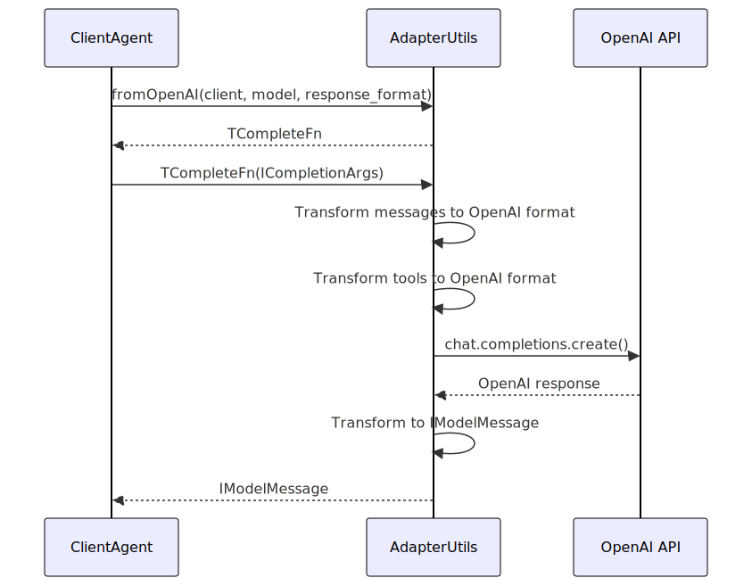

Completion Adapters provide a standardized interface for integrating various AI completion providers (OpenAI, Ollama, Grok, Cohere, etc.) into the agent-swarm-kit system. These adapters handle the translation between the framework's internal message format and each provider's specific API requirements, including message transformation, tool call processing, and error handling.
For information about AI model performance monitoring, see Performance Monitoring. For details about agent-level completion configuration, see Schema Services.
The completion adapter system is built around the AdapterUtils class, which provides factory methods that return standardized completion functions. Each adapter method transforms the internal ICompletionArgs format into provider-specific requests and converts responses back to the framework's IModelMessage format.

The AdapterUtils class serves as the primary factory for creating provider-specific completion functions. Each method returns a TCompleteFn that conforms to the standard completion interface.
| Component | Type | Purpose |
|---|---|---|
AdapterUtils |
Class | Main factory for completion adapters |
TCompleteFn |
Type | Standard completion function signature |
TOOL_PROTOCOL_PROMPT |
Constant | XML-based tool call instruction template |
Adapter |
Singleton | Default instance of AdapterUtils |
The adapter system uses several configuration constants for reliability and performance:
| Constant | Value | Purpose |
|---|---|---|
EXECPOOL_SIZE |
5 | Maximum concurrent executions |
EXECPOOL_WAIT |
0 | Delay between executions (ms) |
RETRY_COUNT |
5 | Maximum retry attempts |
RETRY_DELAY |
5000 | Delay between retries (ms) |
The fromOpenAI method creates an adapter for OpenAI's chat completions API, supporting both GPT models and custom response formats.

The fromOllama method handles Ollama's local model API, including custom tool call protocol injection for models that don't natively support function calling.
Key features:
TOOL_PROTOCOL_PROMPT for tool call supportkeep_alive: "24h"randomString()| Provider | Method | Key Features |
|---|---|---|
| Grok | fromGrok |
X.AI's Grok model API integration |
| Cortex | fromCortex |
Local Cortex server with message deduplication |
| Cohere | fromCohereClientV2 |
Cohere Command-R model support |
| LMStudio | fromLMStudio |
OpenAI-compatible local server |
All adapters perform similar input transformations to convert from the internal ICompletionArgs format:

Tool calls require special handling to convert between the internal format and provider-specific representations:

All adapters implement retry logic using the retry utility with configurable attempts and delays:
retry(
async (args: ICompletionArgs) => {
// Adapter implementation
},
RETRY_COUNT, // 5 attempts
RETRY_DELAY // 5000ms delay
)
Requests are managed through execpool to limit concurrency and prevent API rate limiting:
execpool(
retryFunction,
{
maxExec: EXECPOOL_SIZE, // 5 concurrent
delay: EXECPOOL_WAIT // 0ms delay
}
)
Some adapters (like Cortex) implement message deduplication to handle consecutive messages of the same role:
All adapters integrate with the Logger class for request tracking:
Logger.logClient(
clientId,
"AdapterUtils fromOpenAI completion",
JSON.stringify(rawMessages)
);
Completion adapters are registered and accessed through the completion schema services in the dependency injection system. The adapters are typically configured at the agent level through completion schema definitions.
Adapter executions are tracked by the performance monitoring system for metrics collection and analysis. See Performance Monitoring for details on how completion times and throughput are measured.